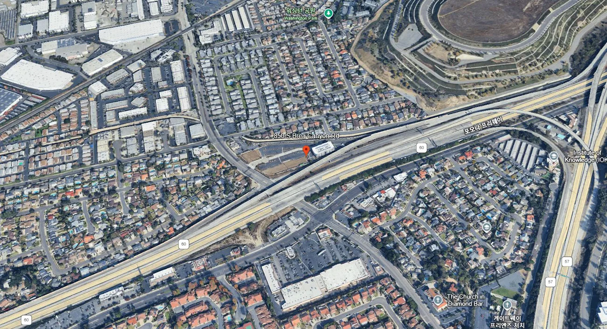
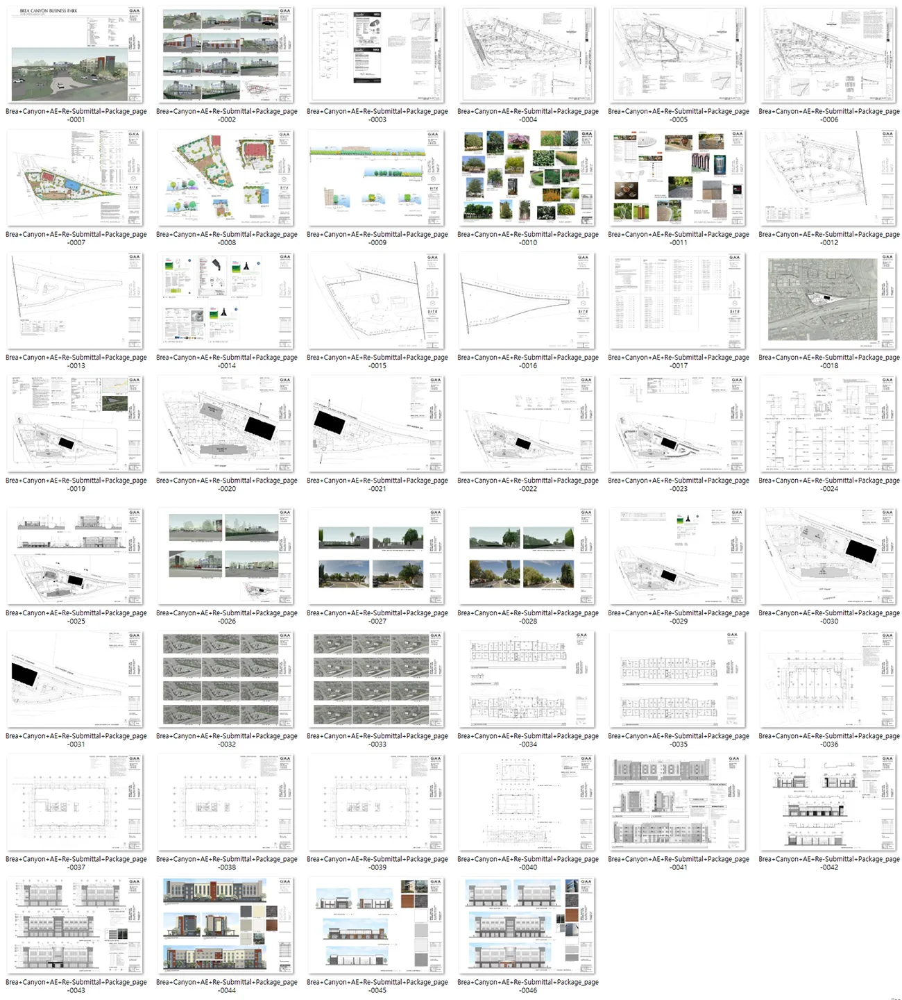
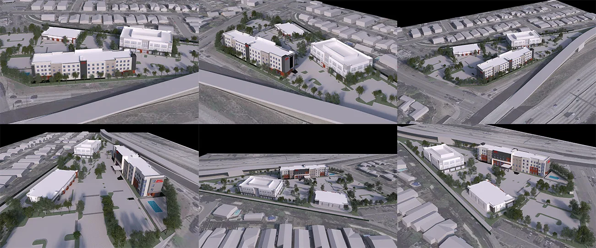
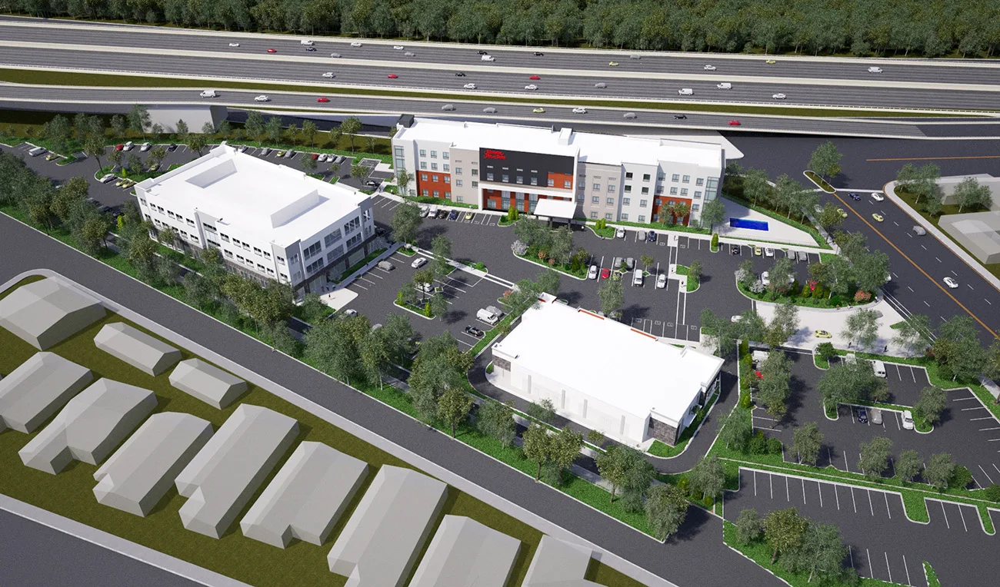
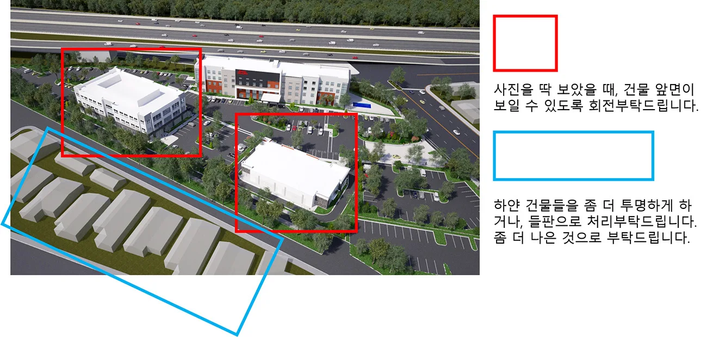
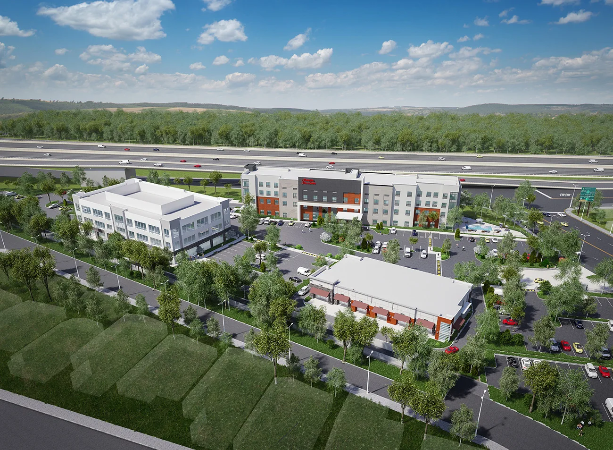
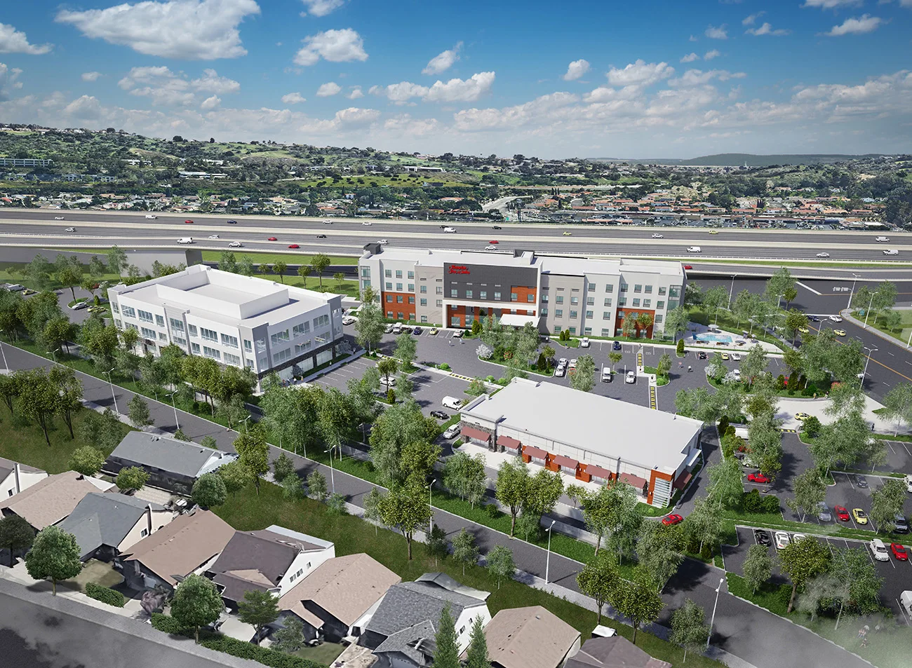

프로젝트 소개
사업대상지: 850 S Brea Canyon Rd, Diamond Bar, CA 91789 미국
비즈니스 파크는 여러 개의 사무실 건물이나 관련 시설들이 모여 있는 지역을 의미합니다. 주로 교외 지역에 위치하며, 도심에 비해 토지 및 건물 비용이 저렴하다는 장점이 있습니다. 또한, 주요 도로, 철도, 공항 등 교통 시설과 가까운 곳에 위치하여 접근성이 좋은 경우가 많습니다.
해당 비즈니스 파크를 조성하기 위한 조감도를 메이크 그룹이 제작하게 되었습니다.

프로젝트 개요
한국에서는 지식산업센터나 오피스텔의 용도의 건물로 사업공간을 활용하는 경우가 많지만 해외의 경우 비즈니스 파크라는 공간을 통해 사업을 영위하는 경우도 있습니다.
해외지역에서 사업을 진행하는 법인의 경우 해당 지역에서 그래픽 작업을 발주하는 것 보다 한국에서 제작하여 비용절감 및 소통의 원활을 추구하여 제작을 의뢰하시는 경우가 있습니다.
시차에 의해 소통이 주야로 어려움에도 소통에 어려움이 없도록 메일 및 문자를 통하여 작업 사항을 주고 받으며 제작을 진행하였습니다.
프로젝트 진행과정
1. 설계도 및 부지 데이터 수령
클라이언트로부터 전달받은 기본 건축 도면, 대지계획, 항공뷰, 지형자료 등을 분석하여
3D 모델링 작업에 착수했습니다.
부지의 실제 지형과 주변 환경을 반영하여
현장감을 갖춘 마스터플랜형 조감도로 표현하는 것이 핵심이었습니다.

여러 해외 프로젝트와 마찬가지로 각종 설계도와 함께 지형정보 주변 건축물들을 모델링하여 앵글 검토용 이미지를 보내어 조감도 앵글을 결정하였습니다.

2. 모델링 및 앵글 시안 제작
다양한 앵글로 테스트 렌더링한 후,
클라이언트에게 조감도 앵글 후보 이미지를 전달해 의견을 수렴했습니다.
✅ 이 과정에서 “비즈니스 파크 전경이 한눈에 들어오도록 하면서,
개별 건물의 구체적인 설계도 함께 표현”하는 구도로 조율하였습니다.


3. 디테일 강화 및 중간 검토
확정된 앵글을 기준으로 건축물, 조경, 차량 및 인프라 요소를 추가하고
**컬러링 및 환경 연출(하늘, 조명, 그림자 등)**을 통해 현실감 있는 이미지로 완성도를 높였습니다.
클라이언트 측에서는 중간 시안 검토 후 세부 수정을 요청하였고,
그에 맞춰 조경 배치, 텍스처 질감, 주변 경관 구성을 조정했습니다.

4. 최종 결과물 납품
모든 검토와 수정이 완료된 후,
최종 결과물은 고해상도 이미지 및 출력 대응 파일 형식으로 전달드렸습니다.

Brea Canyon Business Park의 조감도는
넓은 부지 위에 각기 다른 건축 컨셉이 유기적으로 배치된 구성을 효과적으로 표현했으며,
현장 관계자와 투자자 모두에게 큰 호응을 얻었습니다.
마무리하며
해외 현장이라도, 메이크그룹은 거리와 시차의 장벽 없이
정확하고 신속한 커뮤니케이션, 고품질 결과물, 합리적인 제작 일정을 바탕으로
다양한 글로벌 프로젝트를 성공적으로 수행하고 있습니다.
해외 부동산 개발 프로젝트, 마스터플랜 시각화,
비즈니스 파크나 복합단지 조성 조감도 제작이 필요하신 경우
언제든지 메이크그룹에 편하게 문의 주세요.
CONTACT
TEL : 070-4127-5640